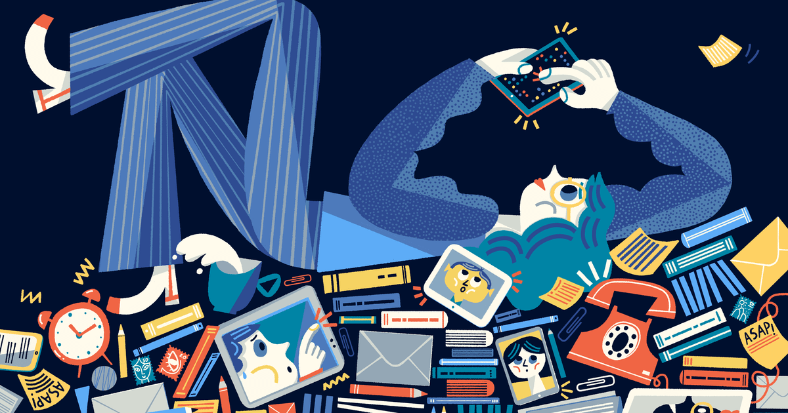
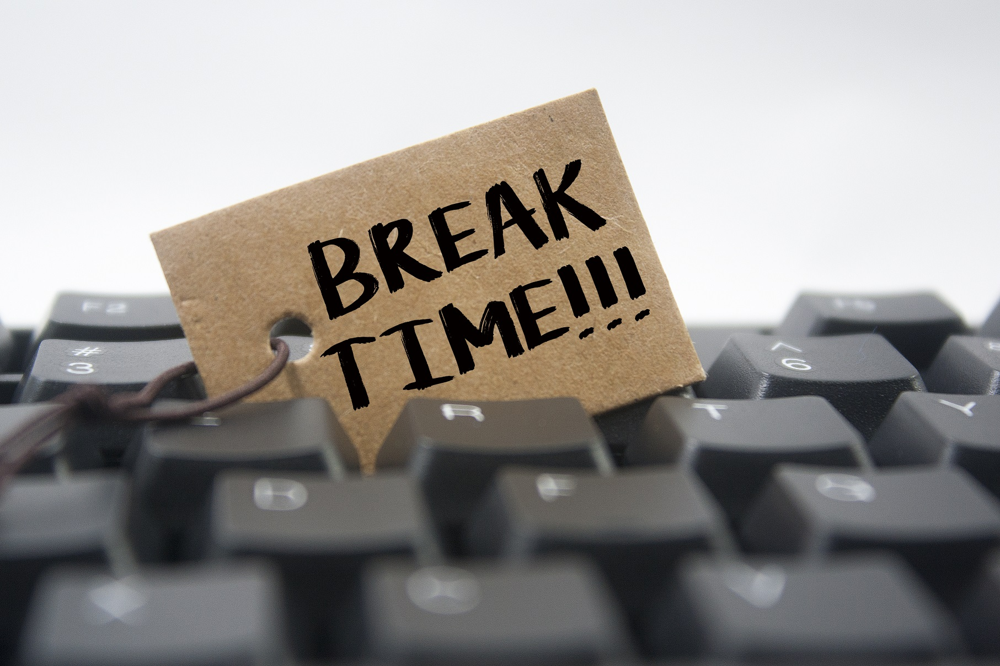

Stop wasting time! Put that phone down and start on your assignments and projects. Here are 10 ways on how to stop procrastination and start being productive!
GET ORGANIZED
Start off by being organized. Simply list down the things you need to do and try to mark in using a calendar app on your phone or even invest in a planner and try to be consistent in updating it with the things you need to accomplish. Once you get the hang of that, it’d be much easier to keep track of assignments and meet deadlines on time.
This is an absolute must and a given. You don’t brink a knife to a gun fight and you most certainly won’t win the war without conquering a battle. Whether you study on your own or with a group of friends, maybe even in a review center, always make sure you give yourself time to study. Make the most out of your summer break to pick up a college entrance exam review book and try taking mock tests so you can also practice your speed.
ELIMINATE DISTRACTIONS
Group study sessions aren’t always helpful. It sounds fun but when you’re surrounded by your friends, your attention span will be divided and have the need to interact with one another. Your mate’s progress might put you off too and might not help with your motivation. Revising a group study session is more effective when everyone already memorized the material and you can check on each other’s knowledge.
Try to set a time for studying too. Be sure you have everything you need in your workspace and try to not get up as much as possible when doing work until the time you’ve set up for your work is finished. Let’s say you allotted an hour for work and a 30 minute break after that. That means in the one hour you allotted for work, you have a water bottle, you already went to the bathroom, and try to mute notifications from your phone and keep them out of reach so you won’t get tempted to check your phone. The second you get up from your workspace, you’d be more prone to distractions and it will ruin your work momentum. Try to stay in the zone to avoid further procrastination!
SET SIMPLE, ACHIEVABLE GOALS
One of the many reasons we procrastinate is because the task at hand seems too daunting to do. Try to break down your tasks into smaller goals and work your way around these smaller tasks bit by bit. You’d be surprised at the progress you’ll be able to achieve if you have this mindset and habit. Instead of saying “I’ll study biology tonight”, say “I’ll study chapter six tonight”, that way your goals will seem less intimidating and actually doable.
CREATE A TIMELINE/SCHEDULE
Set your own timeline and schedule. Try to get some work done in your own time. Work out a map such as studying chapter 5 on Tuesday and study chapter 6 on Wednesday, or maybe say to yourself that I can write the script for the project today and memorize the lines tomorrow with the rest of my group. Start working on your big projects or studying for big exams even though the deadline is still a month away. Map out the tasks you want to accomplish. As mentioned in the previous step, breaking down your goals into smaller chunks will make it more manageable.
SET A DEADLINE
It is important that you set a specific date for when you want your goals to accomplish. It’s great that you tell yourself that you’ll “organize your notes someday” or “I’ll do my math homework eventually”, but these “someday”s and “eventually”s are never gonna come and that’s the harsh truth. It’s going to end up as another avenue for procrastination so if you need to have something done, you must have an aim on when to complete it and the best practice is to get it done earlier then the deadline.
TIME YOURSELF
Set a time of intense and focused study session to prevent yourself from burning out. Research show that the best range of 50-90 minutes is more than enough and you can allow yourself a break after all the workload.
TAKE A BREAK
There’s absolutely nothing wrong with taking mental breathers from school work from time to time. When the time you set for your study session is done, take a 10-30 minute break and do something that will take your mind off work and relax. You’d be surprised at the productivity you will have when you resume work after a break.
USE INCENTIVES
Everyone loves being rewarded. It’s important to give yourself incentives, no matter how small. It could be something as simple as, "If I work on this assignment for an hour, I'll watch an episode of my favorite TV show tonight." Or it could be a bigger goal like, "If I get an A in math this semester, I'll go to my favorite restaurant.” It’s easier to pay attention when something is at stake.
GET THE HARD STUFF DONE FIRST
This may make you want to push everything back farther. It's hard to do something that you don't want to do. But guess what? Once you do it, it's over! It is best to complete your most challenging assignments first. That way everything after it seems easier and takes a shorter amount of time. If you keep pushing that English essay back, you’re never going to get it done. It’s best to buckle down and just do it.
TELL SOMEONE ABOUT YOUR GOAL
It’s easy to forget about assignments or put them off if you’re the only person holding yourself accountable. If you really want to get something done, tell a friend or family member. Now there is someone holding you responsible for your goals. You can't back out or slough it off. As an added bonus, you also have someone to celebrate your victories with, no matter how small. Whether it’s getting an A on that physics test or just finishing a project a few days in advance, your friend will be there to support you.
A student from University of the East. Date modified: May 6, 2021